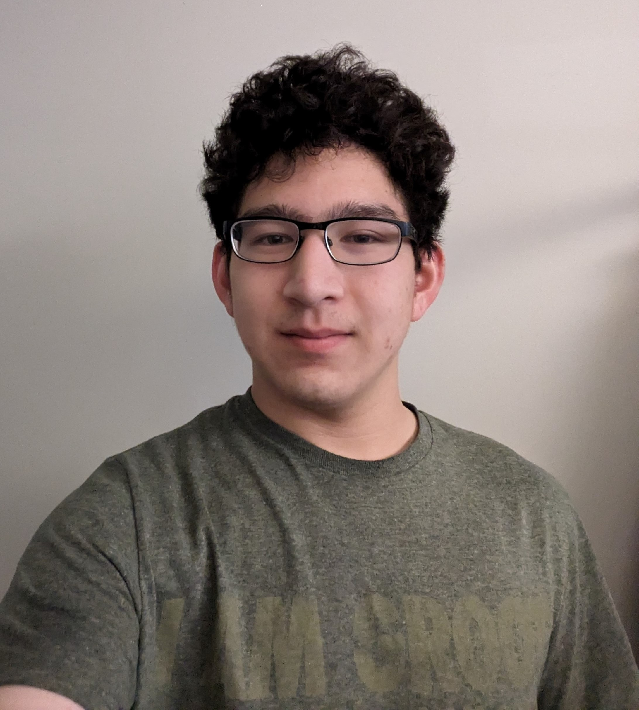

EECS 348 Lab Seven Practice 1
Josh Park
joshjungpark@ku.edu

Qualifications
-
KU Student CS Undergrad
Relevant Classes Taken:
- EECS 101
- EECS 140
- EECS 168
- EECS 210
- EECS 268
- EECS 330
- EECS 348
- EECS 388
-
Participation in organizing events with the KU Smash club
This is a trailer we made for Sweet Spot 7
We still hold weekly tournaments in LEEP2 2425 on Sunday Nights at 7
If you're interested you can click this to join the KU Smash discord
-
Work Experience
- Pizza Shuttle
- 2 Years as Kitchen/Front
- Oriental Bistro
- 9 Months as Delivery Driver
-
High School FIRST Robotics Participation
-
4 years as a member of team 5268
-
2 years as programming team leader